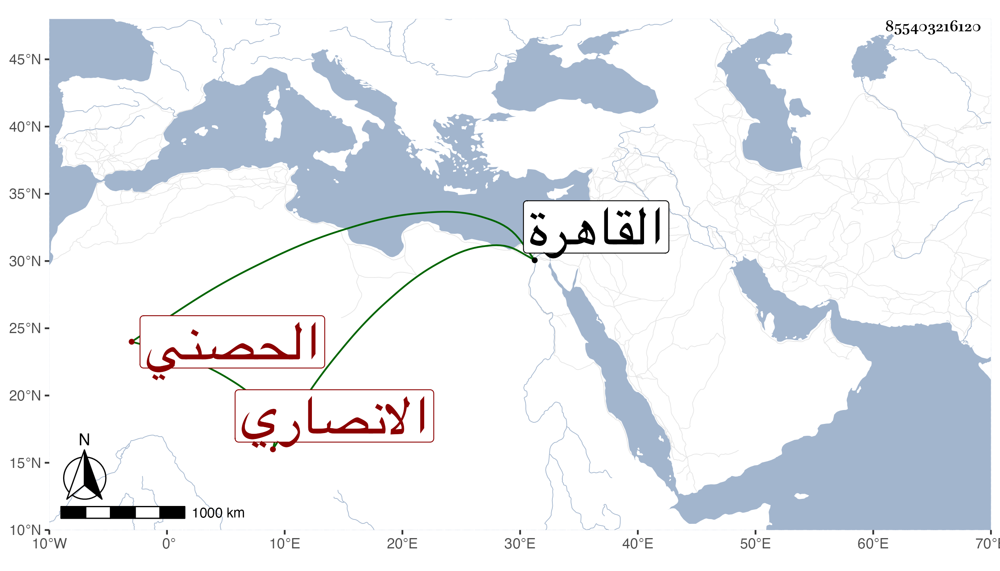

0902Sakhawi.DawLamic.ITO20230111-ara1.EIS1600.855403216120
Biography ID: 855403216120
834
ناصر بن علي بن محمد بن أحمد الانصاري الحصني ويعرف بالعراقي وبالحكيم . ولد تقريبا سنة ست عشرة وثمانمائة وقدم القاهرة بعد أن اشتغل في بلاده ولقي جماعة ، وفهم العربية وتميز في الطب وعالج به وجود الخط وكتب به أشياء وربما جلس مع الشهود . وقد تردد إلي قليلا ورام الأخذ عني وكان فخم العبارة مع فضيلة في الجملة . مات في ربيع الأول سنة إحدى وتسعين .
